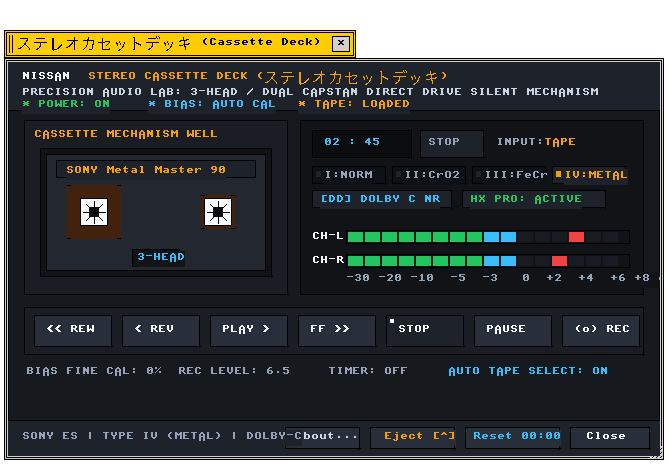
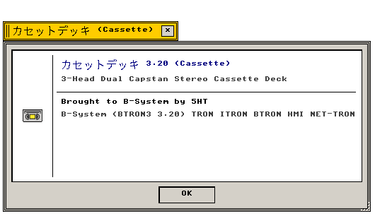

カセット (Cassette)
カセット · BTRON3 3.20 準拠 · C99 実装
Cassette アプリケーションの機能仕様および内部構造
"Functional and architectural specification of the Cassette application component."
← アプリケーション一覧 (Applications Index)
カセット（Cassette） — カセット（Cassette）は、B-Systemの仕様に準拠したC99実装アプリケーション。PCMオーディオストリームおよびTADアニメーションのマルチトラック再生デッキ。
"Official technical specification for the Cassette application within the B-System operating environment."
画面プレビュー (Screen Preview)

実機描画フレームバッファより自動抽出されたステレオカセットデッキ Cassette (Native Headless GDEV Capture)

実機描画フレームバッファより自動抽出された透過バージョン情報ダイアログ (About Cassette)
概要 (Overview)
カセット（Cassette）は、B-Systemの仕様に準拠したC99実装アプリケーション。SONY TC-K777ES 3-Head Dual Capstan 精密ステレオカセットデッキを忠実に再現した高品位オーディオコンポーネントです。
"Official technical specification for the SONY TC-K777ES Hi-Fi Cassette Deck application within the B-System operating environment."
1. メニュー構造と操作体系 (Menu Architecture & Operations)
Cassette が提供する操作体系およびフロントパネルコントロールの仕様。
"Front chassis controls, tactile transport operations, and interactive command bindings."
| 操作項目 |
機能説明 (Functional Description) |
技術仕様・C99実装 (C99 Architecture) |
| 走行制御 (Transport) |
再生 (Play)、逆再生 (Rev)、早送り (FF)、巻戻し (Rew)、停止 (Stop)、一時停止 (Pause)、録音 (Rec) |
audio_deck_event_handler |
| 磁気テープ種別 (Tape Type) |
Type I (NORM / Fe2O3), Type II (CrO2), Type III (FeCr), Type IV (METAL) 自動・手動切替 |
CASSETTE_TAPE_TYPE |
| ノイズリダクション (NR) |
Dolby B / Dolby C ノイズリダクション切替、HX Pro ダイナミックバイアス制御 |
DOLBY_MODE, hx_pro |
| バージョン情報 (About) |
デッキ情報および作者クレジット表示（Nano About Box 520×270px） |
open_cassette_about_window |
2. 機能仕様とアーキテクチャ (Functional & Architecture Specifications)
Cassette アプリケーションの内部構造、データモデル、およびシステムコール仕様。
"Internal architectural components, memory models, and system call bindings."
| コンポーネント・機能名 |
動作概要と機能仕様 (Functional Specification) |
技術仕様・C99構造体 (C99 Implementation) |
| アーキテクチャ |
BTRON3 Specification 3.20に完全準拠したC99クリーンルーム実装。 |
src/apps/audio_player.c |
| デッキ筐体描画 |
ブラッシュドグラファイト・チタン質感およびデュアルVUメーター・リール回転アニメーション。 |
audio_deck_paint |
| バージョン情報ダイアログ |
レトロアイコン（cassette.gif）と3Dベベル枠による独立ウィンドウ表示。 |
app_menu_create_about_dialog |
| イベント処理 |
ボタン押下・テープ装填イジェクト・バイアス調整などのリアルタイムイベントハンドリング。 |
audio_deck_event_handler |
関連コンポーネント (Related Components)